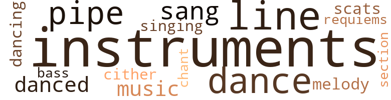
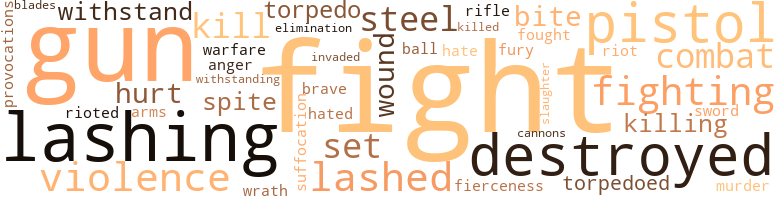

Music terms in the text
41 music-related terms matched in this text.
Most frequent terms in this topic: instruments (7); dance (6); pipe (5); line (4); sang (3)

bass.n.07
Definition: the member with the lowest range of a family of musical instruments
| word |
sentence |
| bass |
He was a bass drummer in the drum and bugle corps , and he was feeling a bit tired from carrying the bass drum that afternoon . |
chant.n.01
Definition: a repetitive song in which as many syllables as necessary are assigned to a single tone
| word |
sentence |
| chant |
The world was set aflame with a chant of mad battle cry . |
dance.n.01
Definition: an artistic form of nonverbal communication
| word |
sentence |
| dance |
She said , " Do you want me to come tonight and keep you company , or do you prefer going to a dance and afterwards go to a night-capper ? " |
| dance |
She said , " Come , let us go to a dance . " |
| dance |
So they got ready and left his place of rest for the dance . |
| dance |
Scores of taverns furnished liquor and women , and the dance . |
| dance |
The trees were swaying back and forth as if they were doing a weird primitive dance . |
dance.v.03
Definition: skip, leap, or move up and down or sideways
| word |
sentence |
| dancing |
The ballroom was so large that about three thousand people were dancing to this lovely music . |
| danced |
Lendoro and Walter danced for a while , then she introduced him to some of her lovely friends . |
| dance |
The night-capper was a place to dine , dance and drink . |
| danced |
The crew at times danced and sang . |
music.n.01
Definition: an artistic form of auditory communication incorporating instrumental or vocal tones in a structured and continuous manner
| word |
sentence |
| music |
The music was a mixture of jazz , light and grand opera with a sentimental tinge . |
| music |
The ballroom was so large that about three thousand people were dancing to this lovely music . |
musical_instrument.n.01
Definition: any of various devices or contrivances that can be used to produce musical tones or sounds
| word |
sentence |
| instruments |
They use powerful microscopic lenses with electrical tubes of blue flames and scientific instruments of different types . |
| instruments |
" Then they go back to their scientific instruments and pre - pare the fluids for the injections into the living in the vats . |
| instruments |
There were tables with instruments , oxygen tanks , and other med - ical apparatus . |
| instruments |
" Seeing and knowing what to do at the right time with the instruments they are using ensures a very successful operation . |
| instruments |
There were different types of musical instruments and the deep , heavy musical back - ground came from twenty-five large , heavy harps . |
| instruments |
They went into this building , and there were people at work on different types of ray pistols , ray guns and para - lyzing ray instruments . |
| instruments |
It took time and years , with scientific minds and new devices , new instruments , and new inventions to start getting things back to normal . |
pipe.n.04
Definition: a tubular wind instrument
| word |
sentence |
| pipe |
He being my very great friend , I sat with him , whereupon he lighted a pipe of tobacco . |
| pipe |
But to return to the President , and his pipe of tobacco before that was out . |
| pipe |
Finally the captain stood up and reached into his pocket for his pipe and tobacco . |
| pipe |
He filled his pipe and lit it , pulling away and walking around his desk . |
| pipe |
The captain was alone and sitting at his desk , smoking his pipe . |
requiem.n.02
Definition: a musical setting for a Mass celebrating the dead
| word |
sentence |
| requiems |
We looked into the belfries , where the pendulous bells were waiting in vain for the summons which should awaken their marriage peals ; together we touched the mighty organ-keys that sang no jubilates for the ear of heaven , that sang no requiems for the ear of human sorrow ; together we searched the silent nurseries , where the children were all asleep , and had been asleep through five generations . |
scat.n.01
Definition: singing jazz; the singer substitutes nonsense syllables for the words of the song and tries to sound like a musical instrument
| word |
sentence |
| scats |
All around the room the scats were elevated from the floor to about six feet in height . |
section.n.01
Definition: a self-contained part of a larger composition (written or musical)
| word |
sentence |
| section |
The vehicle moved over to a section of this great building and stopped . |
sing.v.02
Definition: produce tones with the voice
| word |
sentence |
| sang |
We looked into the belfries , where the pendulous bells were waiting in vain for the summons which should awaken their marriage peals ; together we touched the mighty organ-keys that sang no jubilates for the ear of heaven , that sang no requiems for the ear of human sorrow ; together we searched the silent nurseries , where the children were all asleep , and had been asleep through five generations . |
| sang |
We looked into the belfries , where the pendulous bells were waiting in vain for the summons which should awaken their marriage peals ; together we touched the mighty organ-keys that sang no jubilates for the ear of heaven , that sang no requiems for the ear of human sorrow ; together we searched the silent nurseries , where the children were all asleep , and had been asleep through five generations . |
| sang |
The crew at times danced and sang . |
singing.n.01
Definition: the act of singing vocal music
| word |
sentence |
| singing |
There was an orchestra of thirty men and women with fifty chorus girls dancing and singing . |
tune.n.01
Definition: a succession of notes forming a distinctive sequence
| word |
sentence |
| melody |
The melody was sweet and melodious . |
| line |
They would all march across the field to one of these old houses and stand in line in front of the house . |
| line |
He has reached the end of the road and was waiting to cross the very line that divided him from one science and a greater science which I call super-science . |
| line |
When the job of the four buoy bells is finished , they would be brought over to the craft and placed in the four cylindrical body structures for fitting , during which the four cylindrical body structures would be placed in line , beginning from the top of the craft , and inserted within the main giant body structure . |
| lines |
One of the purposes of these buoy bells is this : When the craft begins her descent down through the water to the sea floor , automatically she leaves these buoy bells floating at the top by means of air , electrical and cable lines . |
| lines |
" When this job is completed , the craft would start ascend - ing through the water to the surface holding the entire vessel , at the same time drawing and winding cables and lines on rotating drums within the bowels of the cylindrical structures on top of the craft , as seen in Figure 4 . |
| line |
When they entered , they were told to stand in line at attention . |
| lines |
They were in long lines on both sides of what appeared to be a long cement street . |
zither.n.01
Definition: a musical stringed instrument with strings stretched over a flat sounding board; it is laid flat and played with a plectrum and with fingers
| word |
sentence |
| cither |
He got up , walked over to the window to see if there was trouble outside , but found there were no lights on anywhere else , cither . |
Violence terms in the text
99 violence-related terms matched in this text.
Most frequent terms in this topic: fight (11); guns (5); destroyed (5); lashing (5); violence (4)

aggravation.n.02
Definition: unfriendly behavior that causes anger or resentment
| word |
sentence |
| provocations |
By that time , I had been half an hour longer with them , in setting before them their sins and heinous provocations , and seriously exhorting them to repentance . |
anger.n.01
Definition: a strong emotion; a feeling that is oriented toward some real or supposed grievance
| word |
sentence |
| anger |
She shall be a monument to men of my mys - terious anger , set in azure light through generations to come ; for I will enshrine her in a crystal dome of my tropic sea . " |
battle.v.01
Definition: battle or contend against in or as if in a battle
| word |
sentence |
| combat |
He tried desperately to concentrate on his fellow soldiers back in camp - anything to combat the horrible fear and loneliness which was engulfing him . |
cannon.n.04
Definition: heavy automatic gun fired from an airplane
| word |
sentence |
| cannons |
She had been located , and from her hull some wood had been brought to the surface by divers ; cannons had been brought up from her decks ; quite a few gold coins had been washed ashore after storms * , but salvage attempts had failed . |
defy.v.01
Definition: resist or confront with resistance
| word |
sentence |
| withstand |
When the Nau - tilus descended to this point , it seemed as if the captain not only tried to sound for finding the bottom , but was trying to show his guest just how much pressure the submarine could withstand , because when the operation of this dive came to an end , the captain said that their position must not be abused , and that they must go up because the Nau - tilus should not be exposed too long to such a terrific pressure as that . |
| withstand |
It might as well have been 300 fathoms , because when it was in Captain Nemo 's plans , he meant for it to withstand terrific pressures - at probably up to five leagues if not more - so that when the Nautilus descended to any depths it would overcome pressures . |
| withstanding |
In the building and testing of the model undersea salvag - ing craft , there was no attempt to discover how far the model could go down for withstanding pressures . |
destroy.v.04
Definition: put (an animal) to death
| word |
sentence |
| destroyed |
Houses said to be as good as many in the City of London were destroyed and the part of the town bordering on the sea entirely disap - peared owing to insecure foundations . |
| destroyed |
THE ENCYCLOPEDIA BRITANN1CA In 1C92 a severe earthquake destroyed the greater part of the town of Port Royal . |
| destroyed |
NOTES AND QUERIES ( 1925 ) Port Royal had once before been destroyed by earthquake in 1602 and even after the fearful disaster ... an attempt was made to rebuild a city of the same name on the shore from which Port Royal had slipped into the sea . |
| destroyed |
At Yellow , a great mountain split , and falling into the level land , covered several settlements , and destroyed nine - teen white people . |
| destroyed |
That germ can be destroyed with the patient recuperating to normal under certain diets . |
elimination.n.05
Definition: the murder of a competitor
| word |
sentence |
| elimination |
Walter soon found out why this method had been estab - lished - for the elimination of accidents . |
ferocity.n.01
Definition: the property of being wild or turbulent
| word |
sentence |
| fierceness |
The insupportable heat of a tropical midsummer was not for many weeks refreshed even by a partial breath of air ; the sky blazed with irresistible fierceness . |
fight.n.02
Definition: the act of fighting; any contest or struggle
| word |
sentence |
| fighting |
Then , with these same designs , there would be the possibility of converting them into fast-moving fighting ships that would carry a body of troops from one point to another fast enough for battle arrangements as decided . |
| combat |
There was quite a bit of training and preparation for overseas duty , so Walter had to abandon his work altogether and settle down to the business of combat duty . |
| fighting |
With this fighting and eating , the water seemed to have turned to blood , and this battle continued throughout the fifty-mile journey at this depth . |
| combat |
With a deadly cunning look , it was lashing its powerful tail backwards and forwards , and the octopus began to sway fiercely to and fro as they squared off for open combat . |
fight.n.05
Definition: a boxing or wrestling match
| word |
sentence |
| fight |
For over a period of years , children read these pirate stories about the old Spanish Main , where in a fight some big galleon that was treasure-laden would be wrecked and go to the bottom of the sea . |
| fights |
Before him appeared such beautiful fights of all colors flashing all about that they reminded him of the great northern lights . |
| fight |
On and on went the fight so furiously that Walter thought surely neither could hold up any longer , but they continued with boundless strength . |
| fight |
They could have gone on with the fight until they released their holds from sheer exhaustion , if it had n't been for being ripped open and losing so much blood . |
| fight |
On and on the fight continued , with each side bringing in new types of heavy war machinery . |
fight.v.02
Definition: fight against or resist strongly
| word |
sentence |
| fought |
The inferior French and Spanish forces fought very bravely against the English and Dutch to defend them - selves , but in spite of it , they had to give ground . |
| fight |
During the attack , the captain and his crew tried valiantly to fight back , but to no avail . |
| fight |
In the confusion , they began to fight among them - selves , and in doing so , they attracted the attention of thou - sands of other fish . |
| fight |
They had become so enraged that they had begun to fight back at the craft . |
| fight |
Fran - tically he tried to fight this thing , but to no avail . |
| fighting |
While standing and watching the destruction of these fighting vessels , his thoughts carried him to the surface of the water . |
| fighting |
It had been torpedoed by this submarine , and in turn the sub had been hit by some of our other fighting vessels . |
| fight |
And if their captives tried to escape or fight back , only death would have been their reward . |
| fight |
" The aggressors began taking over small , helpless coun - tries , powers were formed and came to an agreement to combine and unite their forces to fight for the small coun - tries . |
| fight |
The people of the world no longer could stand this agitation and decided to fight to a finish . |
fury.n.01
Definition: a feeling of intense anger
| word |
sentence |
| fury |
A roaring hurricane in all its fury came across the Caribbean , met the Golden Jlinde and battered it so helpless that she finally sank to the bottom off the eastern end of Santo Domingo near Cape England . |
gun.n.01
Definition: a weapon that discharges a missile at high velocity (especially from a metal tube or barrel)
| word |
sentence |
| guns |
They went into this building , and there were people at work on different types of ray pistols , ray guns and para - lyzing ray instruments . |
| guns |
There I found the President safe , who was overjoyed to see me , and continued the night , but could not sleep for the returns of the earthquake almost every hour , which made all guns in the ship to jar and rattle . |
| gun |
He retired from his job as janitor , and on July 21st he was back in the government service working at the U.S. Naval gun factory in Washington , D. C . |
| guns |
This battle was won by the British and French when they sank a number of Turko-Egyptian warships with heavy guns . |
| gun |
Also , at the front , there was a long , large tube - something on the order of a gun barrel . |
| guns |
They did n't pull their guns , because they knew he was helpless and had to follow them . |
| guns |
Also her guns were salvaged , but the expedition was forced to abandon salvage operations when sharks killed and ate seventeen of its " skin " divers . |
hate.n.01
Definition: the emotion of intense dislike; a feeling of dislike so strong that it demands action
| word |
sentence |
| hate |
" They knew that in order to achieve this goal they would have to eliminate segregation , discrimination and hate . |
hate.v.01
Definition: dislike intensely; feel antipathy or aversion towards
| word |
sentence |
| hated |
The habit of plundering the hated Spaniards got into tlie blood of the men who were ill fitted to lead a sedentary life and the steps from authorised privateersmen , first to unauth - orised buccaneer and then to pirate and murder were easy , and no close scrutiny was placed on the origin of the wealth poured into Port Royal which its owners squandered in drinking and gaming as quickly as they gained it . |
invade.v.01
Definition: march aggressively into another's territory by military force for the purposes of conquest and occupation
| word |
sentence |
| invaded |
Walter stood perfectly still with fear , not moving a muscle , for the octopus was an old man of the sea and Walter had invaded his territory . |
kill.v.10
Definition: cause the death of, without intention
| word |
sentence |
| kill |
She said , " In the operating room , when they have finished with a case , everything moves out and the walls and the floors are washed down clean , the doors are closed , and they spray an anti- septic fluid that will kill any germ that might come in . |
| killing |
The captain said then that he had received a report from the States that a great hurricane had started out from the Gulf and had cut through the heart of Florida , killing thou - sands of people , tearing down buildings , houses , and every - thing in its path . |
| kill |
Finally they stopped , and Walter asked himself , " What is the mystery that lies bound in those wild trees - trees that were motionless until living substance came near enough to start them striking fiercely to kill ? " |
| killed |
Also her guns were salvaged , but the expedition was forced to abandon salvage operations when sharks killed and ate seventeen of its " skin " divers . |
| kill |
" They have found a way to inject fluids into the body to kill a cancer . |
killing.n.02
Definition: the act of terminating a life
| word |
sentence |
| killing |
After Morgan 's death , until the earthquake , this plunder - ing , robbing , stealing , cruelty and killing went on its random way , until God put an end to Port Royal and its ungodly people . |
malice.n.01
Definition: feeling a need to see others suffer
| word |
sentence |
| spite |
The inferior French and Spanish forces fought very bravely against the English and Dutch to defend them - selves , but in spite of it , they had to give ground . |
| spite |
" In spite of this terrible pressure , one of the characters claims that the Nautilus partitions groaned . |
murder.n.01
Definition: unlawful premeditated killing of a human being by a human being
| word |
sentence |
| murder |
The habit of plundering the hated Spaniards got into tlie blood of the men who were ill fitted to lead a sedentary life and the steps from authorised privateersmen , first to unauth - orised buccaneer and then to pirate and murder were easy , and no close scrutiny was placed on the origin of the wealth poured into Port Royal which its owners squandered in drinking and gaming as quickly as they gained it . |
musket_ball.n.01
Definition: a solid projectile that is shot by a musket
| word |
sentence |
| ball |
Now , looking at the undersea ruins scientifically - in a steel ball let down by cable on these tiers in the streets of Port Royal - the diver would be capable of taking pictures from one height , then from another , in any depth of water where the city stands . |
pain.v.02
Definition: cause emotional anguish or make miserable
| word |
sentence |
| hurt |
It hurt Walter td think of how little advancement there had been made in the field scientifically . |
| hurt |
Some bricks came falling over my shoes , but none hurt me . |
pistol.n.01
Definition: a firearm that is held and fired with one hand
| word |
sentence |
| pistols |
They went into this building , and there were people at work on different types of ray pistols , ray guns and para - lyzing ray instruments . |
| pistols |
Not only to furnish the island but vast quantities are thence again transported to supply the Spaniards , Indians and other nations , who in exchange return us bars and cakes of gold , wedges and pigs of silver , pistols , pieces - of-eight and several other coins of both metals , with stores of wrought plate jewels , rich pearl necklaces , and of pearls unsorted or undrilled several bushels , besides which we are furnished with the purest and most fine sorts of gold dust from Quincy , by the Negro ships that first came to Jamaica to deliver their blacks , and there usually refit and stay to reload three or four months , in which time , though the companies ' gold may be partly sent home , yet the mer - chants , masters of ships and almost every mariner having pri - vate cargoes take occasion to sell or exchange great quanti - ties , some of which our goldsmiths there work up , who being yet but few , grow very wealthy , for almost every house hath a rich cupboard of plates , which they carelessly expose , scarce shutting their doors at night , being in no apprehen - sion of thieves for want of receivers as fore-said , and whereas most other plantations either did and now do keep their accounts in sugar , or the proper commodities of the place , for want of money , it is otherwise in Jamaica , for in Port Royal there is more plenty of running cash proportionable to the number of its inhabitants than is in London . |
| pistol |
Each wore a sort of pistol belt around his body and a large belt across his shoulders . |
| pistols |
After they got out , they reached for and pulled out of their holders objects resembling pistols with different designs . |
| pistol |
She was dressed as some of the others , but on her uniform she was carrying a pistol . |
rifle.n.01
Definition: a shoulder firearm with a long barrel and a rifled bore
| word |
sentence |
| rifle |
Besides the people being so desperately wicked , it makes me afraid to stay in the place , for that very day this terrible earthquake happened , as soon as night came on , a company of lewd rogues , whom they call privateers , fell to breaking open warehouses and deserted houses to rob and rifle their neighbors whilst the earth trembled under them , and the houses fell on some of them in the act , and those audacious whores who remain still upon the place are as impudent and drunken as ever . |
riot.n.01
Definition: a public act of violence by an unruly mob
| word |
sentence |
| riot |
The wealth which was displayed in the streets of Port Royal might indeed have been pleasing if the sound of arms and the riot of intemperance could have been excluded from an assembly of successful corsairs . |
riot.v.01
Definition: take part in a riot; disturb the public peace by engaging in a riot
| word |
sentence |
| rioted |
Port Royal was the first city founded by Anglo-Saxons in which rioted unchecked that license so characteristic of the American West and the Australian gold fields two hundred years later . |
sic.v.01
Definition: urge to attack someone
| word |
sentence |
| set |
It formed a long , powerful cylinder and was set on a great tank chassis with a smaller upper structure of the same . |
| set |
About three feet from this platform was a small , round tele - visor half-face with a screen set upon two steel rods . |
| set |
Walter noticed that the glass table legs were set on a roller rail device attached to the wall . |
slaughter.n.03
Definition: the savage and excessive killing of many people
| word |
sentence |
| slaughter |
There was no stopping this great slaughter . |
sting.n.03
Definition: a painful wound caused by the thrust of an insect's stinger into skin
| word |
sentence |
| bite |
Walter went straight to his room , had a bite to eat , and fell off to sleep . |
| bite |
We will go and have a bite to eat . " |
suffocation.n.01
Definition: killing by depriving of oxygen
| word |
sentence |
| suffocation |
The serious trouble was the men and their fear of being crushed to death or dying of suffocation . |
sword.n.01
Definition: a cutting or thrusting weapon that has a long metal blade and a hilt with a hand guard
| word |
sentence |
| steel |
When it had moved down about ten feet , it rested on rails and moved from the room out of their view , leaving a large , round steel plate supported by a powerful cylinder and plunger , by means of a hydraulic lift . |
| sword |
They arrived with their pockets already loaded down with coins taken at the point of the sword , pieces-of-eight , golden moidores , cross money , piastres , doubloons . |
| steel |
The powerful steel plates trembled under this great pressure at the fastening of the bolts ; the sides of the submarine bent ; the observation windows seemed to curve under these pressures , yet somehow the firm structure of this submarine did not yield , because Captain Nemo had said it was capable of resisting and would resist like a solid block . |
| steel |
These hulls were joined together by T-shaped irons com - posed of powerful steel plates . |
| blades |
It was a machine that resembled a whale with its propeller blades inserted within its center structure well out of sight of the eye , but there were two heavy propellers in the rear . |
torpedo.v.01
Definition: attack or hit with torpedoes
| word |
sentence |
| torpedo |
The officers on watch between two and three o'clock in the morning saw the wake of a torpedo , A tremendous explosion followed , and * the Tubantia was hit in her side and started sinking . |
| torpedo |
Unfortunately for Germany , it was proven beyond all doubt that it had been a German operation , because , from the Tubantia s boats , bits of the torpedo were found to be of German origin . |
| torpedoed |
The British liner Laurentic was torpedoed off Donegal , Ireland , during World War I , carrying with it to the bottom thirty million dollars in gold , silver bullion and coins , settling in 120 feet of water . |
| torpedoed |
It had been torpedoed by this submarine , and in turn the sub had been hit by some of our other fighting vessels . |
violence.n.01
Definition: an act of aggression (as one against a person who resists)
| word |
sentence |
| violence |
Its violence far exceeded the average of seismic dis - turbances , and the accompanying phenomena were specta - cular and sinister . |
| violence |
The tremendous convulsions were repeated with little intermission , though with decreasing violence , for the space of three weeks ; and every fissure in the rocks , every cleft in the cracked and parched earth , was steaming with sulphurous fumes . |
| violence |
The rest of the water was swept by a tidal wave , and then such violence that ships broke from their anchors . |
| violence |
The wind rushed with great violence , and there were powerful , lashing waves . |
war.n.03
Definition: an active struggle between competing entities
| word |
sentence |
| warfare |
There would be a change in tank warfare , because the tanks would have a streamlined scientific design for the purpose of focusing powerful rays that could spell disaster , at the same time being capable of floating on the watbr , as well as traveling on land . " |
weapon.n.01
Definition: any instrument or instrumentality used in fighting or hunting
| word |
sentence |
| arms |
When the craft , while descending ( notice in Figure 2 ) , has its mechanical superstructure arms wide open , for the purpose of enfolding the sunken vessel by means of grappling , it closes as a claw , after the descend - ing motion . |
weather.v.01
Definition: face and withstand with courage
| word |
sentence |
| brave |
Jamaica , July 3,1693 All those streets which were next to the water , towards the harbour-side where there were excellent wharfs , close to which ships of 700-tons might lie and deliver their loading where were the best store-houses and conveniences for mer - chants , where were brave stately buildings , where the Christ - inen of the place lived , and which were in all respects , the principal parts of Port Royal , now lie in four , six , or eight fathoms of water . |
whip.v.04
Definition: strike as if by whipping
| word |
sentence |
| lashing |
When they had reached the port where the helpless submarine lay at the bottom , they found high winds and destructive lashing waves . |
| lashed |
The spires of the church were seen erect for more than a century , and to this day it is believed locally that when great seas are lashed up by a hurricane , the undertow sways the bronze bells of the sunken tower and their ringing is heard on land . |
| lashing |
The wind rushed with great violence , and there were powerful , lashing waves . |
| lashing |
On the night of October 26 , 1859 , in a great storm , the Royal Charter was plowing through the waters trying to make port with 500 lives aboard , but it was overcome and carried down by powerful lashing waves off Anglesey . |
| lashing |
The towering wall of rock was Cape Frio , and , from the powerful lashing waves dashing the frigate from rock to rock against the cliff , holes were battered in the ship 's bottom and she began sinking with water rushing in . |
| lashed |
The craft started this powerful movement , but the octopuses seemed to have anticipated the fast movement in these two driving pro- pellers , and they lashed their powerful tentacles around them . |
| lashed |
Walter look several steps , llien " swish " and one of the tentacles lashed around his body and held him fast . |
| lashing |
With a deadly cunning look , it was lashing its powerful tail backwards and forwards , and the octopus began to sway fiercely to and fro as they squared off for open combat . |
| lashed |
Then it lashed the eel with one of its deadly tentacles . |
wound.n.01
Definition: an injury to living tissue (especially an injury involving a cut or break in the skin)
| word |
sentence |
| wounds |
' If iodine is obtained from the ashes of seaweeds and is used as a counter-irritant , then out of the halogen group of crystalline elements , iodol antiseptic used for wounds and cutaneous diseases is some - thing on the same order as iodide compound mixed with another element , as potassium iodide when dissolved in water is used for syphilis and rheumatism . |
| wound |
From the way these lights were focused on the patient , it seemed as if the wound were pro- jected to the front of the audience . |
wrath.n.01
Definition: intense anger (usually on an epic scale)
| word |
sentence |
| wrath |
Everyone had expected this at the start , but it was said that the coming war would lead on into the great Armageddon and that this great struggle would have a devastating effect upon civilians - they would feel the wrath and suffer the same as the soldiers at the front . |
Religion terms in the text
74 religion-related terms matched in this text.
Most frequent terms in this topic: God (17); church (13); cathedral (7); Nonsuch (3); prayers (2)

baptize.v.01
Definition: administer baptism to
| word |
sentence |
| christen |
I have been twice on shore to pray with the bruised and dying people , and to christen children . |
| christen |
Yesterday we had a very great one , but it seems less terrible on shipboard than on shore , yet I have ventured to Port Royal no less than three times since its desolation , among the shattered houses , to bury the dead , pray with the sick and christen the children . |
| christening |
The television men were there to show everyone in the United States the craft 's christening and launching . |
bible.n.02
Definition: a book regarded as authoritative in its field
| word |
sentence |
| Bibles |
They were stand - ing and looking down into the water with their Bibles under their arms , and on their countenances was a look of sorrow . |
cathedral.n.02
Definition: the principal Christian church building of a bishop's diocese
| word |
sentence |
| cathedral |
Before him were clustered columns that characterized high , pointed arches , forming a dark , coral-encrusted ghostly cathedral after some of its masonry of stones had fallen down to the sea floor and left its solid foundation standing . |
| cathedral |
In the entrance under the arch of this weird cathedral , standing on the plat - forms , were statuettes of Catholic sisters . |
| cathedral |
Just behind a part of the arched opening , a huge giant octopus with quivering arms seemed to have been guarding the entrance to the cathedral with one of his long arms licking around and up the cathedral walls in front of the sisters ' faces . |
| cathedral |
Just behind a part of the arched opening , a huge giant octopus with quivering arms seemed to have been guarding the entrance to the cathedral with one of his long arms licking around and up the cathedral walls in front of the sisters ' faces . |
| cathedral |
His mind wandered deeper , searching farther beyond this ghostly-looking Gothic cathedral into the shadowy regions that went sloping down into deeper waters where other tall columns seemed to be stretching outward . |
| cathedral |
He looked up at this old cathedral and its hells were ringing for all they were worth . |
| cathedral |
Then a reply came again , saying , " These old cathedral hells ring quite often . |
catholic.n.01
Definition: a member of a Catholic church
| word |
sentence |
| Catholic |
In the entrance under the arch of this weird cathedral , standing on the plat - forms , were statuettes of Catholic sisters . |
chant.n.01
Definition: a repetitive song in which as many syllables as necessary are assigned to a single tone
| word |
sentence |
| chant |
The world was set aflame with a chant of mad battle cry . |
christendom.n.01
Definition: the collective body of Christians throughout the world and history (found predominantly in Europe and the Americas and Australia)
| word |
sentence |
| Christendom |
It glit - tered with jewels and squandered treasure and sent up a lusty reek from all vices in Christendom . |
| Christendom |
Moved to fervor by the spectacular fall of the town that had been called " the most wicked place in Christendom , " and also " the richest spot in the universe , " Thomas DeQuincey wrote , generations after the event ; God smote Savannah-la-mar , a mythical name for Port Royal , and in one night , by earthquake , removed her , with all her towers standing and population sleeping from the steadfast foundations of the shore to the coral floors of ocean , and God said , " Pompeii did I bury and conceal from men through seventeen centuries ; this city I will bury , but not conceal . |
church.n.02
Definition: a place for public (especially Christian) worship
| word |
sentence |
| church |
They did n't believe in Him and did n't care to go to church to listen to His word . |
| church |
When the undersea cross currents were disturbed , they ladled across the towers and started the church bells ringing . |
| church |
Derisory prices were paid by merchants for the silks , linens , gold and silver laces , church plate and what not , which they sold in Europe at a scandalous profit . |
| churches |
This city , therefore , like a galleon with all her apparel mounted , streamers flying , and tackling perfect , seems floating along the noiseless depths of ocean ; and oftentimes in glassy calms , through the translucid atmos - phere of water that now stretches like an air-woven awning above the silent encampment , mariners from every clime look down into her courts and terraces , count her gates and number the spires of her churches . |
| church |
All the street where the church stood is overflowed , so that the water is arisen as high as the upper rooms of those houses which are standing . |
| church |
On Wednesday , the 7th of June , I had been at church reading prayers , which I had every day since I was Rector of Port Royal , to keep up some show of religion among a most ungodly , debauched people , and was gone to a place hard by the church . |
| church |
But it increased and we heard the church and tower fall , upon which we ran to save ourselves . |
| church |
I have preached so seasonable to them , and so plain in the last sermon I deliv - ered , in the church . |
| church |
There was no one around to go to church . " |
| church |
In Bantry Bay , near the Irish Free State , lies the galleon Infanta which sank in 1683 with church plate and bars of pure silver valued in excess of $ 320,000 . |
| church |
The church was still standing erect with its tower and bronze bells , as if it had never been touched . |
church.n.04
Definition: the body of people who attend or belong to a particular local church
| word |
sentence |
| church |
The spires of the church were seen erect for more than a century , and to this day it is believed locally that when great seas are lashed up by a hurricane , the undertow sways the bronze bells of the sunken tower and their ringing is heard on land . |
| church |
On Wednesday , the 7th of June , I had been at church reading prayers , which I had every day since I was Rector of Port Royal , to keep up some show of religion among a most ungodly , debauched people , and was gone to a place hard by the church . |
church_service.n.01
Definition: a service conducted in a house of worship
| word |
sentence |
| church |
It being Sunday morning , they were getting church services on the radio . |
curate.n.01
Definition: a person authorized to conduct religious worship
| word |
sentence |
| rector |
GENTLEMAN 'S MAGAZINES ( 1750 ) LETTERS CONCERNING THE EARTHQUAKE IN JAMAICA June 22 and June 28 , 1692 First letter from the rector of Port Royal , which gives scenes of private distress , June 22 , 1692 : Dear Friend , I doubt not but you will both from gazettes and letters hear of the great calamity that hath befallen this island by a terrible earthquake , on the 7th instant , which hath thrown down almost all the houses , churches , sugar works , mills and bridges through the whole country . |
| Rector |
On Wednesday , the 7th of June , I had been at church reading prayers , which I had every day since I was Rector of Port Royal , to keep up some show of religion among a most ungodly , debauched people , and was gone to a place hard by the church . |
| rector |
Second letter dated June 28 , 1692 , from the rector of Port Royal : • Ever since that fatal day , the most terrible that ever I saw in my life , I have lived on board a ship , for the shakings of the earth return every now and then . |
eden.n.01
Definition: any place of complete bliss and delight and peace
| word |
sentence |
| heaven |
We looked into the belfries , where the pendulous bells were waiting in vain for the summons which should awaken their marriage peals ; together we touched the mighty organ-keys that sang no jubilates for the ear of heaven , that sang no requiems for the ear of human sorrow ; together we searched the silent nurseries , where the children were all asleep , and had been asleep through five generations . |
| paradise |
" They are waiting for the heavenly dawn , " whispered the interpreter to himself , " and when that comes , the bells and the organ will utter a jubilate repeated by the echoes of paradise . " |
enshrine.v.02
Definition: hold sacred
| word |
sentence |
| enshrine |
She shall be a monument to men of my mys - terious anger , set in azure light through generations to come ; for I will enshrine her in a crystal dome of my tropic sea . " |
god.n.03
Definition: a man of such superior qualities that he seems like a deity to other people
| word |
sentence |
| God |
In his study , he found reasons why Port Roval rested encrusted in coral very peacefully at the bottom of the Caribbean Sea , Walter was positive that this was no accident , no ordinary happening ; this was God 's work . |
| God |
God had n't concealed it , but had left it for other generations to remember . |
| God |
It was Wal - ter 's belief that God had left that city open for men to dive down into her streets to make a complete study of it in its undersea surroundings - men who were capable , willi scien - tific minds and scientific means of doing the job . |
| God |
After Morgan 's death , until the earthquake , this plunder - ing , robbing , stealing , cruelty and killing went on its random way , until God put an end to Port Royal and its ungodly people . |
| God |
Moved to fervor by the spectacular fall of the town that had been called " the most wicked place in Christendom , " and also " the richest spot in the universe , " Thomas DeQuincey wrote , generations after the event ; God smote Savannah-la-mar , a mythical name for Port Royal , and in one night , by earthquake , removed her , with all her towers standing and population sleeping from the steadfast foundations of the shore to the coral floors of ocean , and God said , " Pompeii did I bury and conceal from men through seventeen centuries ; this city I will bury , but not conceal . |
| God |
Moved to fervor by the spectacular fall of the town that had been called " the most wicked place in Christendom , " and also " the richest spot in the universe , " Thomas DeQuincey wrote , generations after the event ; God smote Savannah-la-mar , a mythical name for Port Royal , and in one night , by earthquake , removed her , with all her towers standing and population sleeping from the steadfast foundations of the shore to the coral floors of ocean , and God said , " Pompeii did I bury and conceal from men through seventeen centuries ; this city I will bury , but not conceal . |
| God |
But Port Royal had much of the greatest share in this terrible judgment of God . |
| God |
I have , I bless God , to the best of my skill and power , discharged my duty in this place , which you will hear from most persons , who come from hence . |
| God |
Thus I have told you a long and sad story , and God knows what worse may happen yet . |
| God |
God put natural wealth there in the sea for all men and women with the intention that they should use their knowledge in getitng it up . |
| God |
God only knows how many billions and billions of dollars would be used for spending in the next years , and continued spending might reach a point of collapse of our money system . |
| God |
When everything was set and ready for this big job to get under way , the people offered prayers to God to help them on their way , because they knew that when this powerful vessel was completed and ready for its first run , they would have crossed the boundary into a new world of super-science . |
| God |
You know God watches over all of us , and it is probable that there would have been another survivor , the same as you . " |
| God |
All we can think , all we can say , with the crew and myself being thrown in such a trance , you being the lone survivor with the craft falling with such force to the bottom of the ocean , is that it was an event directly caused by the power of God . |
| God |
And may God bless you . " |
| God |
If it were true that all that treasure went down and God did n't bury and conceal it from men , then there was a chance that someday , by some means , men would come with scientific devices and apparatus and continue to work under the water until they recovered all of that vast treasure . |
| God |
They prayed to God to help them then , because they were helpless and needed Him in their hour of need . |
hell.n.01
Definition: any place of pain and turmoil
| word |
sentence |
| hells |
He looked up at this old cathedral and its hells were ringing for all they were worth . |
| hells |
Then a reply came again , saying , " These old cathedral hells ring quite often . |
ideal.n.02
Definition: model of excellence or perfection of a kind; one having no equal
| word |
sentence |
| Nonsuch |
We must travel straight across the Caryn seamount to Bermuda or by the way of the Kelvin group , across Muir seamount , then to the right of Bermuda , via St. George to Nonsuch , stopping at the biological station for a short visit . " |
| Nonsuch |
Not many hours had passed before they were pulling into New Nonsuch , Bermuda Isles . |
| Nonsuch |
He gave orders to proceed with the journey , through Castle Harbor passing Cooper 's and Nonsuch Islands out into deep water where contour deep dives had taken place some years before . |
jew.n.01
Definition: a person belonging to the worldwide group claiming descent from Jacob (or converted to it) and connected by cultural or religious ties
| word |
sentence |
| Jews |
S.P. DOM WILLIAM AND MARY S.P. DOM PETITION ENTRY BOOK August 30 , 1692 Proceedings upon petition of Whitehall Isaac Fernandez Dias , Isaac Motes Baruch , Isaac Nunes , and other Jews late of Jamaica , merchants , shows that they were inhabitants , for several years , of Jamaica , and by the earthquake which happened there on the 7th of June last , they have lost all they had . |
lir.n.01
Definition: the sea personified; father of Manannan; corresponds to Welsh Llyr
| word |
sentence |
| lers |
Once the part or half was locked in the mechanical arms , then the craft would begin lifting it by means of the two lifting propel - lers near these arms , while the other propellers would be idle and the driving propellers would be pushing . |
messiah.n.01
Definition: any expected deliverer
| word |
sentence |
| Christ |
Jamaica , July 3,1693 All those streets which were next to the water , towards the harbour-side where there were excellent wharfs , close to which ships of 700-tons might lie and deliver their loading where were the best store-houses and conveniences for mer - chants , where were brave stately buildings , where the Christ - inen of the place lived , and which were in all respects , the principal parts of Port Royal , now lie in four , six , or eight fathoms of water . |
prayer.n.01
Definition: the act of communicating with a deity (especially as a petition or in adoration or contrition or thanksgiving)
| word |
sentence |
| prayers |
On Wednesday , the 7th of June , I had been at church reading prayers , which I had every day since I was Rector of Port Royal , to keep up some show of religion among a most ungodly , debauched people , and was gone to a place hard by the church . |
| prayer |
They then brought me a chair , the earth working all the while with new motions and tremblings , like the rollings of the sea , so much that sometimes when I was at prayer I could hardly keep myself upon my knees . |
| prayers |
When everything was set and ready for this big job to get under way , the people offered prayers to God to help them on their way , because they knew that when this powerful vessel was completed and ready for its first run , they would have crossed the boundary into a new world of super-science . |
religion.n.01
Definition: a strong belief in a supernatural power or powers that control human destiny
| word |
sentence |
| faith |
Visualization had supplied him with faith , and numerous times he tried , but the results were always unsuc - cessful . |
| religion |
On Wednesday , the 7th of June , I had been at church reading prayers , which I had every day since I was Rector of Port Royal , to keep up some show of religion among a most ungodly , debauched people , and was gone to a place hard by the church . |
| faith |
Having faith in God , ourselves and our fellow men and women , we shall bind and seal this book in a vault to keep it from our minds , until some future date when we would open it for everyone to read . |
saint.n.02
Definition: person of exceptional holiness
| word |
sentence |
| Saint |
Off the coast of Flanders , the Saint Andres , a Portuguese galleon , foundered in a storm in 1588 and sank , carrying down with it $ 2,000,000 in silver bullion . |
satan.n.01
Definition: (Judeo-Christian and Islamic religions) chief spirit of evil and adversary of God; tempter of mankind; master of Hell
| word |
sentence |
| devil |
Then there were other species of the underseas , such as the jellyfish , sea devil , ribbon worm , sea cucumber , and quill worm in this Jightlcss depth . |
| devil |
Ilis mate explained to him about what was happening , and he had called the crew so they could see these devil fish , but he 'd had no thought of being attacked by them . |
sermon.n.02
Definition: a moralistic rebuke
| word |
sentence |
| sermon |
I have preached so seasonable to them , and so plain in the last sermon I deliv - ered , in the church . |
| sermon |
I had set before them what would be the issue of their impenitence and wickedness so clearly that they have since acknowledged it was more like a prophecy than a sermon . |
sin.n.06
Definition: violent and excited activity
| word |
sentence |
| sins |
By that time , I had been half an hour longer with them , in setting before them their sins and heinous provocations , and seriously exhorting them to repentance . |
thetis.n.01
Definition: (Greek mythology) one of the 50 Nereids; mother of Achilles by Peleus
| word |
sentence |
| Thetis |
On the morning of December 4 , 1830 , the forty-six-gun frigate Thetis sailed for England under the command of Captain Samuel Burgess from the Rio dc Janeiro harbor with a crew of 100 men . |
| Thetis |
Something happened as the Thetis started for the outer entrance to the harbor and she became stalled ; however , the next morning she set sail again and plowed through the . |